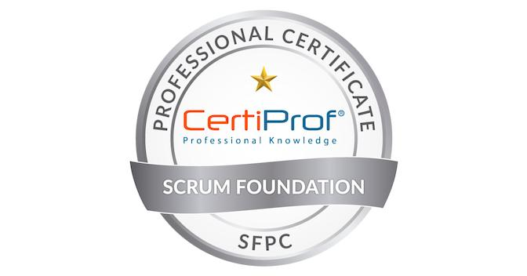

Certificados
Scrum Foundation Professional Certificate

Earners of the Scrum Foundation Professional Certificate have developed the entry-level skills
in scrum that endorses their fundamental knowledge in this framework, key definitions and roles.
The Learning Objectives for this certification are based on: Scrum Guide, 4 values and 12
principles.